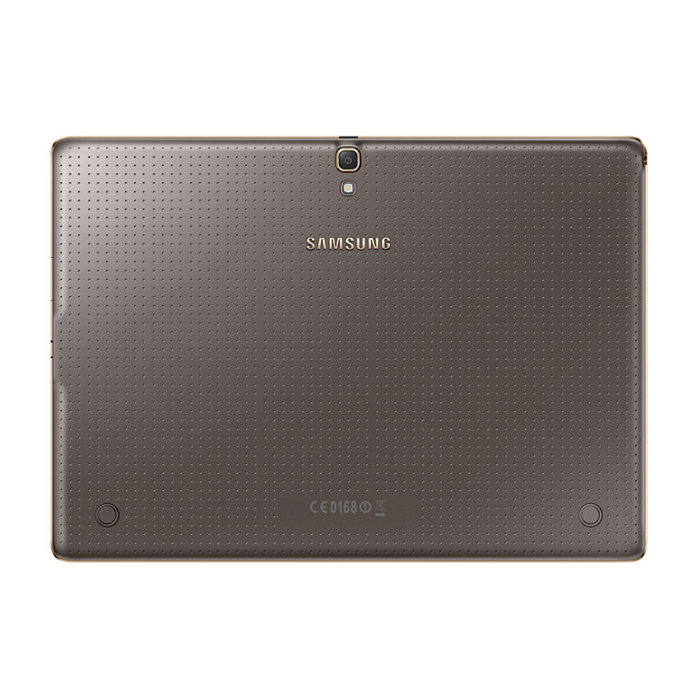

Samsung Note Pro 10.1 - Review
The new Galaxy Tab S is something of a conundrum: on the one hand, it represents a big shift from Samsung, one that promises to finally give it something that can be considered a rival to the iPad, on the other, an over-reliance of familiarity. The Galaxy Tab S range packs one major advantage over the competition: one of the best screens on the market to be plugged into a tablet. At 8.4- and 10.5-inch it uses Samsung's Super AMOLED technology make colours hyper-vibrant, contrast really deep and rich and the resolution, at 2560 x 1600, is pin sharp at all screen sizes. So, what's the verdict on Samsung's possible iPad-beater? It's hard to overstate how beautiful the screen is - for some people, the Super AMOLED technology used in the Samsung Galaxy smartphone range is too much, too over-saturated in colour, but on these tablets I think it's just right; and if you're that bothered, there are settings to tweak the colour up and down to a more LCD-like setting. However, while it's ace that Samsung has made this feature more accessible (a simple tap to make the screen more or less colour saturated) it's only available in video. To me, that's fine as it's the main place I feel I want a little less colour power, but it would be good to see the same trick in photos too. At 10.5 inches, the Tab S is a real rival to the iPad Air in terms of sharpness and screen quality - and that's saying something impressive, as the Air has one of the better displays on the market. As the size scales down, the sharpness of the screen goes up for the Tab S range, with the 8.4-inch version looking as sharp as a smartphone display (when held a little further from the face) but with the benefits of a larger screen. Viewing the web or video on these tablets is something of a dream - it's hard to explain just how nicely nearly everything looks on these displays. I will say this: if you're someone that hates the way Super AMOLED looks on phones then you're going to hate the Galaxy Tab S screens as well. Samsung took great pains to point out how much better the new display was side by side with an LCD (oddly choosing to lament the colour performance of its very own Galaxy Tab Pro) but it just looked different, not better - it depends on your preference. The reading mode, which seems to mostly just enhance the brightness to a more acceptable level - good, but nothing major. The same can be said for the adaptive display, which can moderate the screen's output depending on the lighting type - it was probably too subtle to test, but the demonstration didn't blow me away.
Design
If Samsung has stayed true to its ability with the screen technology, the same thing can be said for the design too. Sadly, while the former is a massive plus I'm still not sold on the way these tablets look. The Tab S range still relies too heavily on plastic - while we were told in immense detail how the new devices were inspired by 'modern architecture' and 'the sunrise on crisp white snow', they've still got the same dimpled and rubberised back as seen on the Galaxy S5. I've said this time and again with the smartphones and, to a degree, it hasn't mattered so much as they've sold in their droves. But Samsung tablets haven't enjoyed the same level of market dominance, and that's partly because they don't ooze the same premium quality that the likes of the Sony Xperia Z2 Tablet and iPad Air manage so easily. Combine that with the dimpled back (the same seen on the Samsung Galaxy S5 and K Zoom) and I just don't feel like I'm holding something that's as well put together as the competition. Even the Google Nexus 7, which is likely to cost a fair bit less than the Tab S, feels better-packaged in my opinion, and is something Samsung needs to get right, and quickly. The tablets aren't even waterproof, which was one major part of the Galaxy S5 and went some way to explaining the decision to go with a rubberised back. However, the materials used aside, the Samsung Galaxy Tab S range does make some clever choices in terms of design. For instance, both are 6.6mm thin at the narrowest point, which is hugely impressive and allows for extended holding without causing wrist strain (helped in part by the 294g / 465g weight). The biometric technology is back again, as it was with the Galaxy S5, and is situated in the same place, the home key. It's not as simple to swipe the finger down, especially on the larger screens in the range, as it requires balancing it in one hand and can be a little awkward. It's accuracy is a little off as a result too, although that's something that requires day in, day out testing to properly assess - it worked for the most part, but that balance (especially on the larger 10.5-inch slate) is something of a slight concern).
Interface
The design of the Tab S range might be slightly updated with the dimpled back, but the TouchWiz interface will be very familiar to anyone that's tried the Samsung Galaxy Tab Pro range, as it combines almost native Android 4.4.2 (in terms of basic icon layout on the home screen) with the South Korean's new idea: Magazine UX. The idea behind Magazine is to offer something new to the Android tablet space, an ability to see news, calendar entries, emails and more all in one home pane. It's something akin to Android and Windows 8 being fused together. I wasn't a fan of the system on the Tab Pro range, namely because it was too laggy and jarred too much with the familiar Android interface I was used to on other Samsung devices. That said, it does have potential in a business environment, and if someone is looking to grab a tab that can work well for both work and home, Samsung has got a lot to talk about here too. It's also hidden away to the right of the main home screen, which are more familiar to most Android users, and while the new user experience is muddled and hard to fathom initially, spend a fair bit of time setting it up and you'll find that it might actually add in some flow if you give the widgets a try. The speed of the interface on all the models in the Galaxy Tab S range was mostly acceptable, helped in part by having an Exynos CPU - this is dubbed octa-core, but in reality it's got two quad core Cortex A7 chips that offer 1.9GHz and 1.3GHz speed respectively, depending on the intensity of task you're performing. But there was a lot of lag on show when jumping between apps - if you're picking up the distinctly last-gen feeling Snapdragon 800 version of the Tab S, this sensation could be even more pronounced. The system worked well, and better than I found on the Tab Pro range: seeing the Tab S launch, it's now become clear why the price has dropped so suddenly on these seemingly more powerful tablets launched in January.
Enterprise features
Samsung, like most tablet makers, watched as Apple dominated the BYOD (Bring Your Own Device) scene as if by mistake. Now, the company is done with watching. The Galaxy Tab S might look and sound like a leisure slate through and through, and that's by design. But with a few extra apps, Samsung thinks it can make inroads in enterprise as well. The lynchpin of Samsung's strategy is Knox, a VPN application developed in-house that's integrated into the firm's devices at the hardware level. But Knox goes beyond just a simple login. Once logged in, Knox creates a sandbox environment in which only designated applications are allowed to enter and interact. Every Galaxy Tab S, whether bought in a Best Buy or handed down by an IT manager, will have Knox capability. You could buy one of these tablets, bring it into your office, and - if your company holds a Knox license - be able to use it safely on the company network. This may be the IT buyer's dream, but does an advanced VPN alone make for a business-ready tablet? Not necessarily. So, Samsung points to the arguably superior Adobe RGB color accuracy of the Super AMOLED screen and its super slim profile as bullet points for its enterprise capability. Sure, the screen is sharper and might be more color-rich than the iPad, but is that enough to dethrone the accidental king of BYOD? Probably not. That said, advanced VPN capabilities and the breadth of Android's app library will certainly help.
Camera
For some reason, Samsung has decided to include an 8MP camera on the rear of the Tab S, with a flash for good measure. I understand the theory behind putting a flash there - it's something that improves the camera and Samsung seems able to do so without increasing the weight or thickness of the tablet - but I still struggle to see the point on a device like this. The range of features to help you take a better picture were all there, albeit slightly limited compared to the speed and prowess of the smartphone brethren. Automatic mode, which I can't see many people straying from, offered more than acceptable snaps. Around the front and there's a 2.1MP sensor, which makes more sense... although I'd almost say there's a better case for switching the front and back sensors as having the ability to take front-facing pictures makes more sense on a tablet, with its large viewfinding screen.
Battery and storage
The battery life on the Samsung Tab S range is pretty high, with the 10.1-inch version packing a massive 7900mAh power pack to push things along - the 4900mAh option in the 8.4-inch tablet might not be as powerful, but should be pretty decent. Given the relative power efficiency of recent Super AMOLED screens, combined with the enhanced power management of the new CPU chipsets around these days, I'd expect the Samsung Galaxy Tab S range to perform well under load, even if you're constantly using them for gaming or watching movies. The media element will be massively helped too by the presence of a microSD slot on the side of the Tab S range, with the 16GB/32GB internal storage supplemented by up to 128GB of external space. If you're thinking of going for the 16GB iteration of the Tab S, as most people will, then a memory card is something of a necessity for siphoning off photos and media as otherwise the larger nature of today's HD apps means you'll be deleting things you probably want to keep before you know it.
Early verdict
The Samsung Galaxy Tab S range is very... well...very Samsung. It's nothing special in terms of design but backed up by an intuitive interface, stunning screen and great specs under the hood. I feel I've written the same preview about Samsung's tablet range a few times now - over and over again it seems to have failed to recognise that at this end of the market, for the premium device that rivals the iPad and Xperia Z2 Tablet, buyers need to feel that the device they're purchasing lives up to the hype. The Tab S duo is definitely one of the strongest Samsung has ever put out, and I can imagine myself getting giddy at the prospect of using the simply stunning screen on a long-haul flight to indulge in a beautiful movie marathon. But unless the price comes in a lot lower than the competition, then the design elements, combined with the slightly cumbersome overlay, might put off those people that were thinking of straying from the Apple, Sony, Google or Amazon flocks.